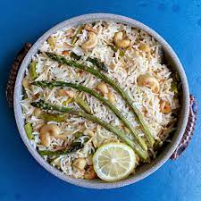

Cashew Rice

This one is a new favorite. It's a rice pilaf with cashews, and can be served with asparagus (or any fresh vegetable!) and some lemon juice. I also like to add a little spice, like red pepper flakes or a cajun spice blend.
Ingredients
- Jasmine Rice
- Broken Spheghetti
- Lightly crushed cashews
- Ghee (or any other favorite cooking oil)
- Garlic
- Onions
- Broth
- Asparagus (or any fresh veggie)
Instructions:
- Heat about 2tbs of oil in a medium sauce pan
- Add garlic, onion, and 2oz of uncooked, broken speghetti and simmer for approximately 5 minutes
- Add 1 cup of uncooked jasmine rice and stir until coated with oil
- Add 2 cups of broth and simmer for approximately 20 minutes (until broth is absorbed)
- Cook and cut veggie seperately as desired
- When rice is finished, add cooked rice to skillet, and mix in cashews
- Serve and enjoy!